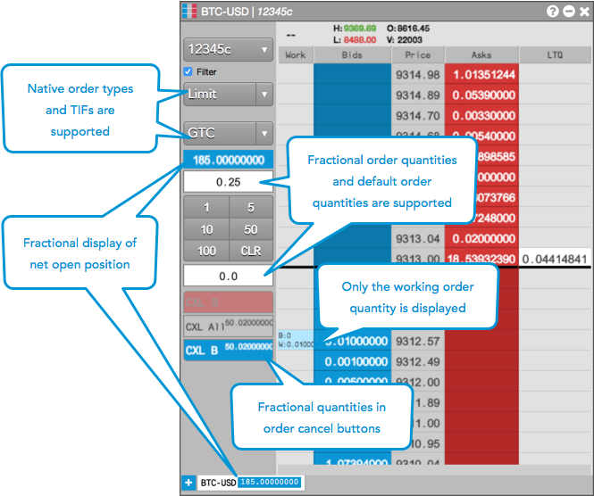

Using MD Trader or the Order Ticket on the TT® platform, you can submit orders for all supported crypto instruments on the following exchanges:
When submitting orders for crypto instruments using MD Trader, consider the following:
Note: Crypto exchange trading sessions are 24 hours. However, positions will reset at at 12:00 UTC (6PM CST), and an SOD record will be created for the next 24 hour trading period.
The following example shows submitting crypto orders with MD Trader.

When submitting orders for crypto instruments using the Order Ticket, consider the following:
The following example shows submitting crypto orders with the Order Ticket.